Audios Universidad
En esta sección tenemos audios de la universidad en la que podremos escuchar el dia a dia de los estudiantes en le universidad.
En esta pagina veremos diferentos audios y videos que el autor hizo (yo) por recomendación del autor recomendamos escuchar los audios con audifonos para mayor comodidad y si lo desean un pequeño snack para cuando les de hambre al escuchar y ver nuestros maravillosos audios y videos.
En esta sección tenemos audios de la universidad en la que podremos escuchar el dia a dia de los estudiantes en le universidad.
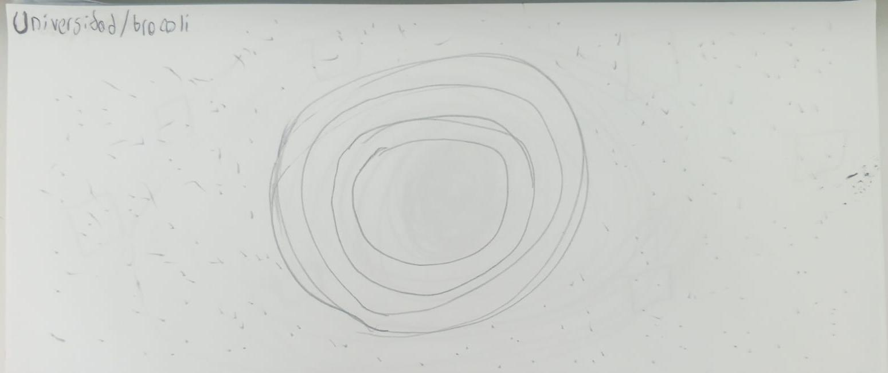
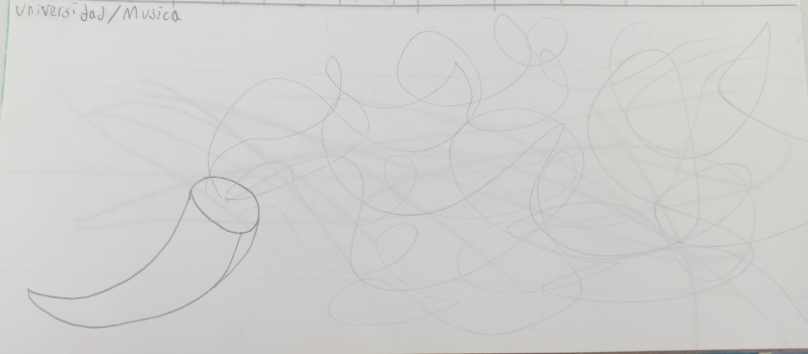
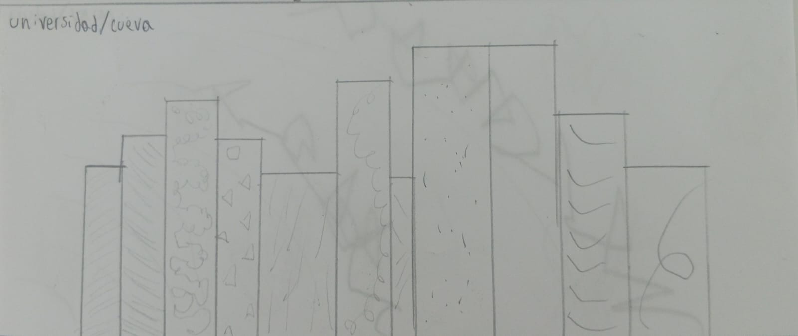
En esta parte escucharemos los sonidos de Cajica que apesar de que la universidad este en bogota el autor le gusto vivir en cajica entoces toca de aca.
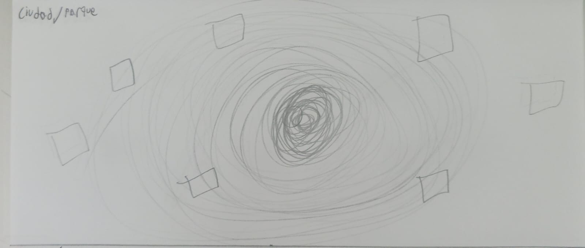
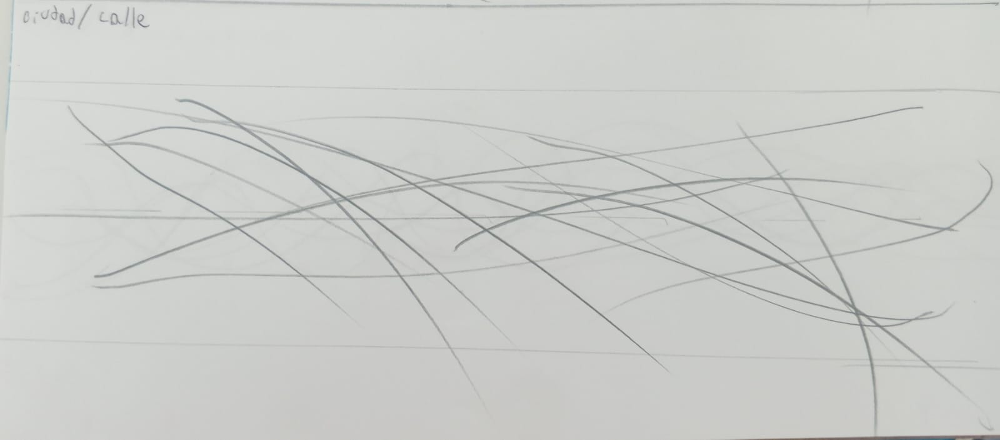
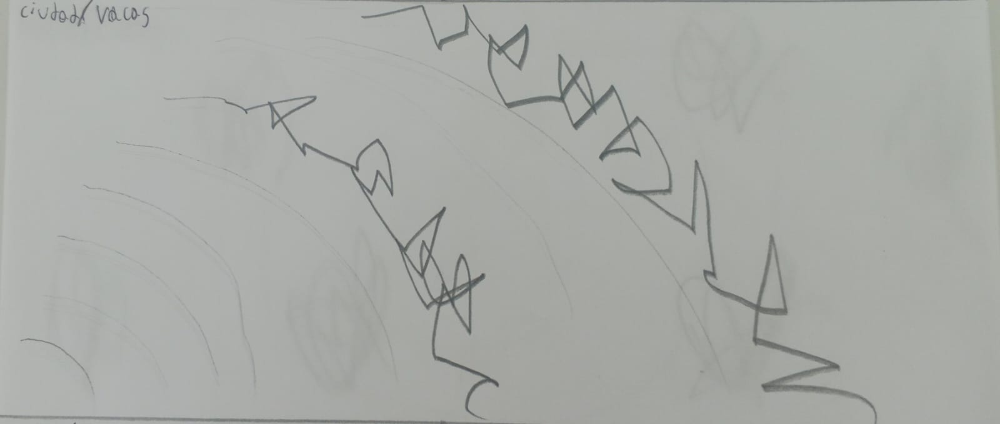
Para estos audios exploraremos los sonidos que puede crear nuestro cuerpo sin depender de nada mas.
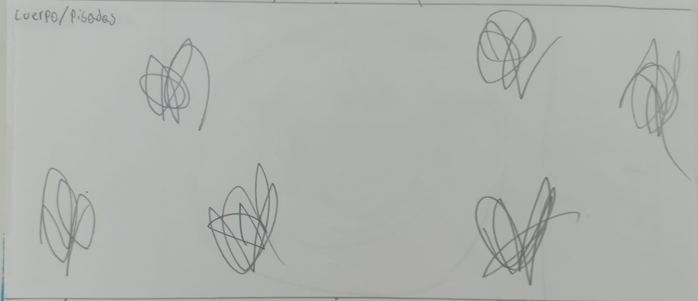
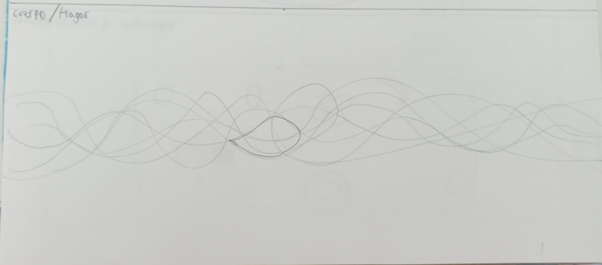
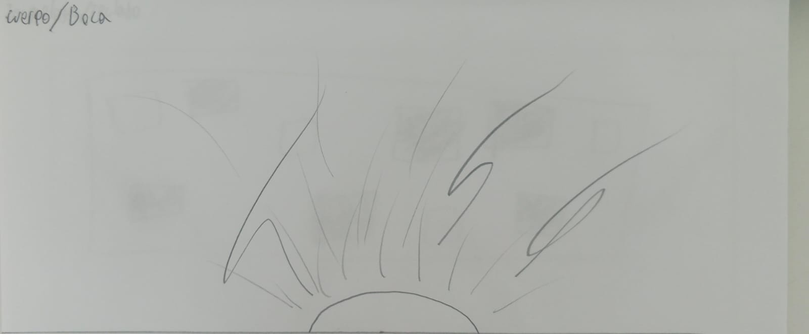
(Ya me quede sin sinonimos para empezar) Vamoa escuchar los sonidos que puede producir la tecnologia creada por el humano.
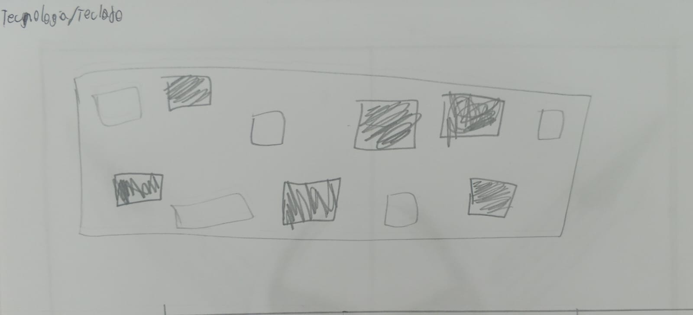
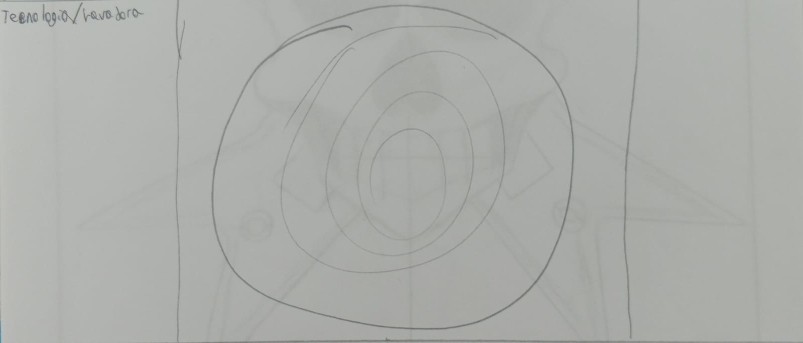
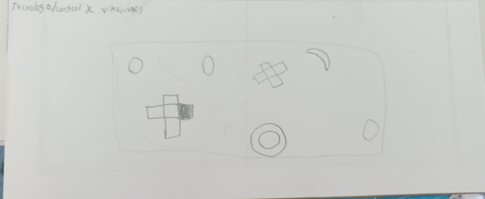
| Lugar | Sonido | Fecha | Duración |
|---|---|---|---|
| Universidad | Brocoli | 17/03/2026 | 19 S |
| Universidad | Musica | 17/03/2026 | 26 S |
| Universidad | Cueva | 17/03/2026 | 19S |
| Ciudad | Parque | 13/03/2026 | 21 S |
| Ciudad | Calle | 17/03/2026 | 26 S |
| Ciudad | Vacas | 13/03/2026 | 23 S |
| Cuerpo | Pisadas | 17/03/2026 | 22 S |
| Cuerpo | Tragar | 17/03/2026 | 17 S |
| Cuerpo | Boca | 17/03/2026 | 19 S |
| Tecnologia | Teclado | 17/03/2026 | 16 S |
| Tecnologia | Lavadora | 17/03/2026 | 34 S |
| Tecnologia | Joy-cons | 17/03/2026 | 24 S |
Ahora vamos a ver la increible movilidad de 2 panes
Para esta ocación veremos como nuestro protagonista se enoja por no poder completar su juego.
Para esta parte nuestro creador tuvo que ir al parque del cafe a grabar el recorrido del tren y para nada tenia ese video de antes.
Ahora veremos a 2 colores peleandose porque si
| Lugar | Video | Fecha | Duración |
|---|---|---|---|
| Casa | Cocina | 17/03/2026 | 19 S |
| Casa | Estudio | 17/03/2026 | 8 S |
| Quindio | Parque del cafe | 27/12/2025 | 25 S |
| Casa | Habitación | 17/03/2026 | 22 S |